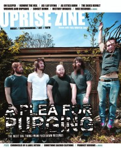

A Plea For Purging
|  |
| Fall 2007 Uprise Zine |
Media coverage:
- Sep 2007 in HM "Faces to Watch: A Plea For Purging"
- Fall 2007 in Uprise Zine "A Plea For Purging"
- Jan 2008 in HM "Accidental Results", by Bear Frazer
- Jan 2008 in CCM "New Noise: A Plea For Purging", by Andrew Schwab
- Mar 2009 in HM "A Plea For Purging", by Doug Van Pelt
- Sep 2010 in HM "A Plea For Purging", by Nathan Doyle
- Oct 2011 in HM "Broken, Hurt, Pissed, Angry, Sad", by Levi McAllister
Albums & reviews:
2007: A Critique of Mind And Thought
- Nov 2007 in HM, by Dan Frazier
- Apr 2008 in Heaven's Metal, by Lloyd Harp
- Mar 2009 in HM, by David Stagg
- Jun 2009 in Heaven's Metal, by Lloyd Harp
- Jul 2010 in HM, by Nathan Doyle
- Jan 2012 in HM, by Matthew Leonard

© 2011 CMnexus. Last updated September 2019. Contact: editor -AT- cmnexus -DØT- org About